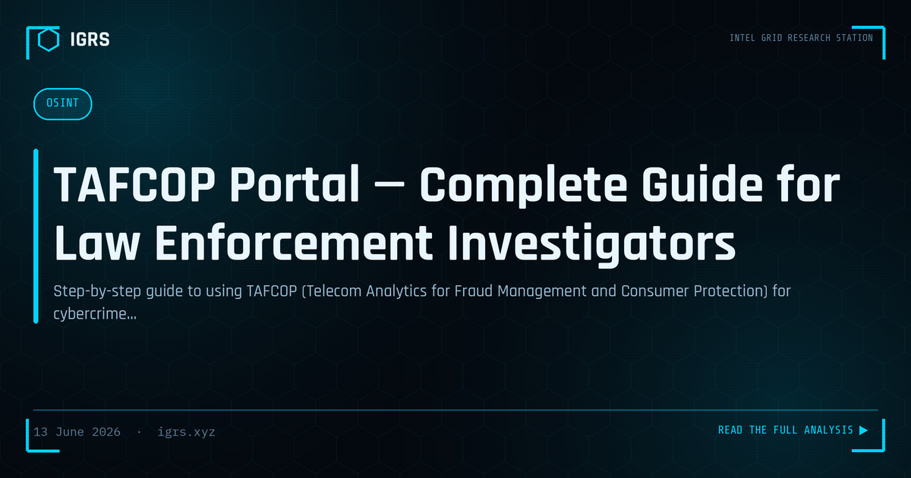

TAFCOP Portal — Complete Guide for Law Enforcement Investigators
TAFCOP: An Underused Investigative Powerhouse
TAFCOP — Telecom Analytics for Fraud Management and Consumer Protection — may be the most underutilised investigation tool available to Indian law enforcement and citizens alike. Part of the Department of Telecommunications' Sanchar Saathi initiative, it sits at the intersection of identity, telecom, and fraud. For any investigation involving a phone number, TAFCOP is often the ideal starting point. This guide explains its full capabilities for law enforcement.
What TAFCOP Does
At its core, TAFCOP reveals how many mobile connections are registered against a given Aadhaar. Since every legitimate SIM in India is tied to an Aadhaar, and the number of SIMs per Aadhaar is capped, TAFCOP exposes a critical fraud indicator: identities with an abnormal number of registered SIMs, which signals mule operations or identity misuse.
The SIM Limit Framework
| Region | Maximum SIMs |
|---|---|
| Most of India | 9 |
| Jammu & Kashmir | 6 |
| Northeast & Assam | 6 |
An Aadhaar with connections approaching or exceeding these limits warrants investigative attention, as fraudsters frequently register multiple SIMs on stolen or complicit identities.
Investigative Use Cases
TAFCOP supports numerous investigation types:
- SIM swap fraud — verify unauthorised connections issued on a victim's Aadhaar
- OTP fraud — identify the SIM registration behind fraudulent numbers
- Mule networks — detect identities with many SIMs feeding fraud operations
- Digital arrest scams — trace the SIM registration behind extortion calls
- WhatsApp scams — identify the Aadhaar behind fake account numbers
The Law Enforcement Portal
Beyond the public-facing TAFCOP, law enforcement has access to enhanced DoT capabilities for Aadhaar-linked SIM queries, connection details, and SIM blocking orders. Access requires appropriate authorisation — typically at SP rank or above through the state's DoT nodal officer. This authorised access provides the authoritative data needed to attribute numbers to identities in formal investigations.
Complementary Portals
| Portal | Function |
|---|---|
| TAFCOP | SIM-to-Aadhaar verification |
| CEIR (ceir.gov.in) | Device blocking by IMEI |
| Chakshu | Reporting suspected fraud communication |
| ASTR | AI-based duplicate SIM detection |
Together, these Sanchar Saathi tools provide comprehensive coverage — TAFCOP for the connection layer, CEIR for the device layer, and Chakshu for citizen fraud reporting.
Legal Authority for TAFCOP Access
Law enforcement access to Aadhaar-linked SIM data operates under proper legal authority. The relevant provisions include Section 92/94 BNSS for production of records and the authorised LEA processes established with the DoT. Investigators must ensure their access is authorised, purpose-documented, and compliant with data protection obligations under the DPDP Act 2026.
From SIM Data to Full Investigation
TAFCOP rarely concludes an investigation — it begins one. Once a SIM is linked to an identity, the investigation expands: CDR analysis maps the suspect's network, bank account correlation reveals financial connections, and social media OSINT builds the identity picture. TAFCOP provides the crucial first link between an anonymous number and a real identity, from which the broader investigation unfolds.
Detecting Mule SIM Operations
One of TAFCOP's most powerful applications is detecting mule SIM operations. Fraud syndicates register many SIMs on stolen or rented Aadhaar credentials to power their operations. When investigation reveals a number is one of many on a single Aadhaar, or that an individual's Aadhaar hosts SIMs they never authorised, it exposes the mule SIM supply chain that underpins much of India's telecom-enabled fraud.
Citizen Use and Public Awareness
While this guide focuses on law enforcement, TAFCOP's public function is itself an investigative asset. Citizens who regularly check their connections and report unauthorised SIMs help shrink the pool of mule SIMs available to fraudsters. Investigators should promote public awareness of TAFCOP as both a protective measure and a way to surface fraud that might otherwise go undetected.
Maximising TAFCOP in Investigations
To use TAFCOP effectively, investigators should treat it as the standard first step for any phone-number investigation, combine it with CDR and CEIR for complete telecom intelligence, ensure proper legal authorisation for enhanced access, and recognise the fraud indicators it reveals — particularly abnormal SIM counts signalling mule operations. Mastering TAFCOP and the broader Sanchar Saathi ecosystem gives Indian investigators a decisive advantage in the telecom-enabled cybercrime that dominates the current threat landscape.